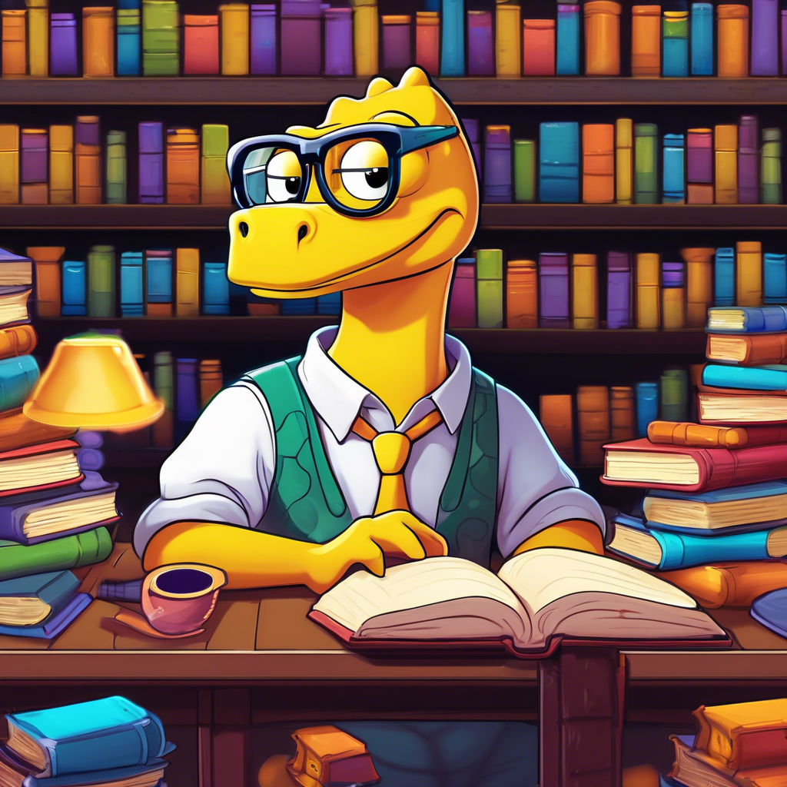
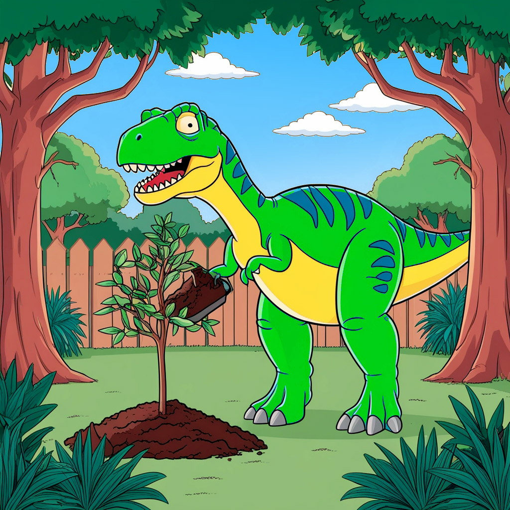

DESCUBRA OS DINOSSAUROS MAIS EXÓTICOS E CRIATIVOS DO JURÁSSICO!
Prepare-se para desbravar uma aventura jurássica como você
nunca viu antes! Nesta página, você encontrará
dinossauros que vão além da imaginação, cada um com
características únicas e histórias inesperadas.
Desde o filosófico Filosossauro até o agitado
Punkossauro, esses seres lendários
mostram que a criatividade também habitava o passado
pré-histórico.
Navegue pelos dinossauros exóticos abaixo e clique em
seus nomes para expandir e descobrir detalhes curiosos
e divertidos sobre cada um. Será que você conhece
todos os segredos do Jurrásico? Vamos descobrir juntos!
Filosossauro Philosaurus contemplus

O Filosossauro era um dinossauro herbívoro peculiar,
conhecido não apenas por seu tamanho imponente, mas também por seu
comportamento contemplativo. Com uma cabeça grande, adornada com chifres
curvados, ele passava horas parado em clareiras, observando o mundo
ao seu redor como se estivesse em uma profunda reflexão filosófica.
Os filhotes de Filosossauro eram ensinados a observar a natureza e
a meditar sobre questões existenciais, como "O que é ser um dinossauro?"
e "Qual o significado da vida nas florestas?" Isso fez com que
se tornassem um símbolo de sabedoria entre outros dinossauros,
que frequentemente se reuniam em torno dele em busca de conselhos.
Curiosamente, acredita-se que o Filosossauro desenvolveu um comportamento
quase pacifista. Quando confrontado com predadores, ele não fugia nem atacava.
Em vez disso, erguia uma sobrancelha escamosa, questionando o agressor:
“Será que a verdadeira luta não é, na verdade, contra o vazio dentro de nós?”.
Ele frequentemente se isolava em montes rochosos para contemplar o horizonte,
se perguntando se o universo era realmente infinito ou se os meteoros
representavam apenas o final de um grande ciclo cósmico.
Nerdossauro Intellectusaurus geekus

O Nerdossauro é, sem dúvida, o mais curioso e peculiar de todos os dinossauros.
Reconhecido pela sua fixação por padrões, teorias e colecionáveis pré-históricos,
esse dinossauro poderia facilmente ser encontrado nas cavernas mais silenciosas,
rodeado de pedras brilhantes que ele organizava metodicamente,
categorizando-as por cores e densidade.
Com sua postura levemente corcunda e seus olhos sempre semicerrados de tanto
examinar detalhes, o Nerdossauro podia ser visto ajustando seus óculos de
pedra (um invento que, embora inútil, lhe conferia um ar intelectual).
Seus amigos mais próximos eram o Filosossauro, com quem discutia teorias do tempo
e do espaço, e o Cefetossauro, com quem dividia o entusiasmo por novas invenções.
Embora fosse alvo de piadas por parte de dinossauros mais "ativos", o Nerdossauro
sempre tinha uma resposta afiada na ponta da língua: "Podem rir de mim,
mas quando um meteoro estiver chegando, quem vocês vão querer do lado?
O cara forte ou o cara que sabe calcular a trajetória dele?"
Fofocassauro Gossiposaurus verbosus
O Fofocassauro é a verdadeira máquina de boatos da era jurássica.
Conhecido por sua língua afiada e seu insaciável apetite por novidades,
ele passava mais tempo conversando do que caçando ou se protegendo de predadores.
Sempre com as orelhas em pé, ele parecia ter um radar natural para captar
qualquer ruído de interesse – seja um conflito entre dois Tiranossauros
ou o acasalamento secreto de um casal de Pterodátilos.
O Fofocassauro não era malicioso, mas simplesmente incapaz de guardar
uma informação para si. Se um Velociraptor desaparecia misteriosamente,
o Fofocassauro já estava lá, narrando uma teoria elaborada sobre onde ele foi parar,
completando a história com detalhes "exclusivos" que ele supostamente soube em
primeira mão. Suas conversas raramente eram confirmadas, mas isso não importava,
pois o que ele amava de verdade era o drama e o entretenimento de espalhar as fofocas.
Em termos físicos, o Fofocassauro possuía uma boca surpreendentemente grande e ágil,
ideal para falar sem parar, e ouvidos aguçados, perfeitos para capturar cada sussurro
do vale. Sua cauda longa às vezes balançava de forma nervosa, como se estivesse sempre
pronta para contar a próxima novidade.
Apesar de ser um falador nato, o Fofocassauro muitas vezes escapava de enrascadas
ao usar seu dom da palavra para se safar de situações perigosas, distraindo predadores
com uma história dramática sobre algum "escândalo" entre outras espécies. Afinal,
quem poderia resistir a uma boa fofoca?
Musculossauro Fitnessaurus energicus

O Musculossauro é o verdadeiro "rato de academia" da era jurássica,
um dinossauro obcecado por ficar em forma e desenvolver sua força.
Ele é facilmente reconhecido por seus músculos bem definidos,
escamas brilhantes e uma postura sempre ereta, como se estivesse
posando para uma competição de fisiculturismo a qualquer momento.
Este dinossauro passa horas em sua “academia natural”, que consiste em
grandes pedras e troncos de árvores, onde ele levanta pesos de rochas
e faz flexões com sua cauda. O Musculossauro tem um grupo de amigos
igualmente dedicados, e eles frequentemente se reúnem para treinos em grupo,
onde competem para ver quem consegue levantar mais peso ou correr mais rápido
entre os grandes pilares de rochas.
Além de sua paixão pelo fitness, o Musculossauro é um motivador natural.
Ele não hesita em encorajar outros dinossauros a se juntarem a ele na busca
por uma vida saudável e ativa. “Vamos lá, pessoal! Cada repetição conta!
O futuro do seu corpo começa agora!” é seu lema.
Punkossauro Punkosaurus rebellicus

O Punkossauro é um dinossauro ousado e cheio de atitude, conhecido por
sua rebeldia e estilo de vida punk. Ele é o ícone da contracultura jurássica,
sempre desafiando normas e convenções, e promovendo a liberdade de expressão.
Com escamas de cores vibrantes e um impressionante moicano espetado,
o Punkossauro se destaca na multidão. Ele frequentemente usa acessórios
como pulseiras de spikes e jaquetas de couro feitas de folhas e pelagens de dinossauros.
Sua aparência única é um símbolo de sua individualidade e criatividade.
O Punkossauro adora música e é um talentoso músico, frequentemente tocando em bandas
com outros dinossauros. Seus shows são energéticos e cheios de emoção, promovendo
mensagens de liberdade, resistência e mudança social. Ele é conhecido por suas
letras provocativas que desafiam a ordem estabelecida e incentivam os dinossauros
a serem fiéis a si mesmos.
Além de sua paixão pela música, o Punkossauro também é um defensor de causas sociais,
organizando protestos e eventos para levantar a consciência sobre questões importantes.
Ele acredita que todos os dinossauros devem lutar por seus direitos e lutar contra a opressão.
Technossauro Technossaurus musicalis
O Technossauro é o rei das pistas de dança, com uma energia vibrante e contagiante,
sempre pronto para a próxima rave eletrônica, ele se joga ao som do Techno jurássico!
Suas músicas favoritas possuem alto BPM, batidas tribais com efeitos distorcidos e uma vibe underground.
O verdadeiro predador das pistas é o Technossauro! Suas pernas grandes e torneadas
revelam suas habilidades de dança, ninguém desce até o chão e volta como ele faz.
Sua couraça reluz quando exposta à luz negra, revelando um brilho intenso e neon em tons de verde e rosa.
Quando o som começa a tocar na selva, de longe ele é capaz de escutar e corre em busca do rolê.
Sempre cercado de outros amigos dinossauros como o Punkossauro, eles sabem aproveitar
a vida ao som de hits que jamais escutaremos pois estão fora do nosso espectro audível.
Motocassauro Motocassaurus ifoodicus
O Motocassauro é o mais veloz de todos os dinossauros! Com sua motoca invocada, ele
sempre limpinha e de tanque cheio, ele sai cortando as trilhas da floresta para chegar até você
pontualmente com o seu rango ainda quentinho! Por isso, sua categoria merece todo o seu respeito e gratidão!
Sempre conectado e pronto para te atender, ele mata a sua fome, levando seu pedido faça chuva ou faça sol.
Mas fique ligado! Receba ele na sua porta, pois ele não pode parar pra entrar na sua caverna,
porque tem vários outros pedidos de outros dinossauros esfomeados para entregar e o tempo voa!
Mais rápido que um meteoro, o Motocassauro gosta é de velocidade e de fazer manobras perigosas como o grau.
Está sempre de capacete, para sua própria segurança, jaqueta de couro e sua mochila térmica vermelha cheia de lanches.
Sua motoca é potente e também sustentável, movida a hidrogênio (uma fonte de energia renovável, limpa e inesgotável,
produzido a partir da eletrólise da água em hidrogênio e oxigênio), já que naquele tempo ainda não havia petróleo...
Jardinossauro Arbossaurus terrestris

O Jardinossauro, desde a sua época, já se preocupava com o equilíbrio do planeta, evitando desastres
e o aquecimento global através da disseminação de árvores pela Pangeia.
O Jardinossauro é o maior responsável pela existência de tanta diversidade da flora na era jurássica.
É também um grande entendedor das técnicas de permacultura e agroecologia, juntamente com o Mineirossauro.
Além disso, observando os potenciais de usos das árvores, ele passou também a plantar para explorar a madeira para construçãode abrigos, para a
fabricação de papel e livros para o Filossauro, Nerdossauro e Cefetossauro, além de fornecer toras pesadas para o Musculossauro treinar.
Apesar dos seus bracinhos pequenos, sua força é capaz de levantar uma Sequoia inteira!
De todas as espécies de árvores, as que ele mais gosta de plantar são as árvores frutíferas,
já que ele é um dinossauro vegetariano por escolha própria, mesmo com descendentes carnívoros.
O Arbossauro é facilmente identificado pelas suas cores verde, azul e amarelo, além de sempre
portar uma bolsa cheia de sementes e mudas que ele carrega consigo por onde vai, para espalhar o verde.
Seus excrementos são um potente adubo que acelera o processo de enraizamento das árvores e também espanta pragas.
Mineirossauro Caipirossaurus pãesdequeijus
Os Mineirossauros vivem pelas montanhas do interior da Pangeia, em sítios e fazendas.
Em suas casas ecológicas de arquitetura vernacular eles aplicam técnicas bioclimáticas
de tradições e sabedorias acumuladas por gerações, utilizando apenas materiais sustentáveis,
orgânicos e locais, resultando em abrigos eficientes e de baixo impacto no meio ambiente.
Além de seus saberes construtivos, os Mineirossauros também dominam saberes culinários,
como transformar leite em queijo e com este fazer o seu prato favorito: o pão de queijo!
Também produzem artesanalmente o doce de leite, geléias e compotas de frutas jurássicas, biscoitos,
broas, roscas e bolos! Tudo preparado no fogão e forno a lenha, que dão um sabor diferenciado nas receitas.
Para o Mineirossauro não tem tempo ruim, qualquer motivo é desculpa pra assar e comer um
pãozin de queijo, tomar um cafézin e apreciar as paisagens das montanhas de Minas,
escutando um modão de viola e as aves jurássicas a cantar. UAI! Esse trem é bão demais da conta sô! OPCV!
Cefetossauro Studossaurus cafeinicus
O Cefetossauro também pode ser encontrado em Minas e outros Estados da Pangeia, é um dinossauro estudioso,
bastante curioso, disposto a aprender sobre todos os saberes já descobertos e em busca do
desenvolvimento de novas tecnologias e da evolução do conhecimento em prol de sua comunidade jurássica.
De carapaça azul em diferentes tons, carregando livros, artigos e uma grande xícara de café,
o Cefetossauro é facilmente identificável. Muitas vezes estressado, sobrecarregado e às vezes surtando
em burnout, este dinossauro sofre de ansiedade, porém não se desanima... o conhecimento o motiva!
Com o apoio dos seus colegas, Nerdossauro e Filosossauro, o Cefetossauro enfrenta os desafios diários
da vida acadêmica jurássica como a falta de internet do campus ou bugs no portal da CAPES!
Sempre correndo contra os prazos, ele tarda mas não falha, para entregar um trabalho com relevância, inovação e excelência!